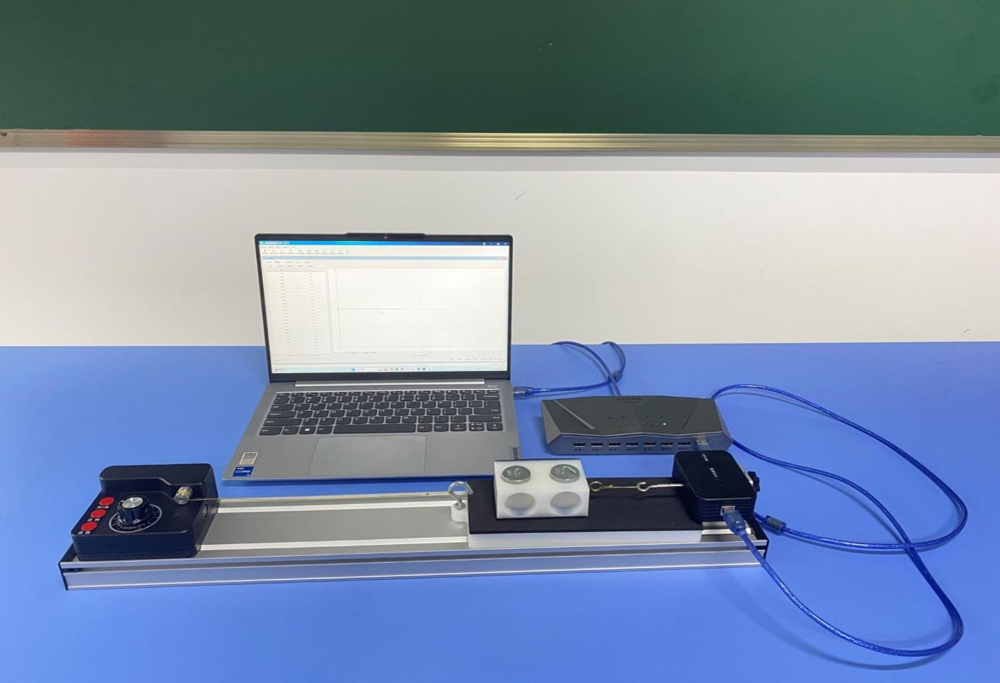
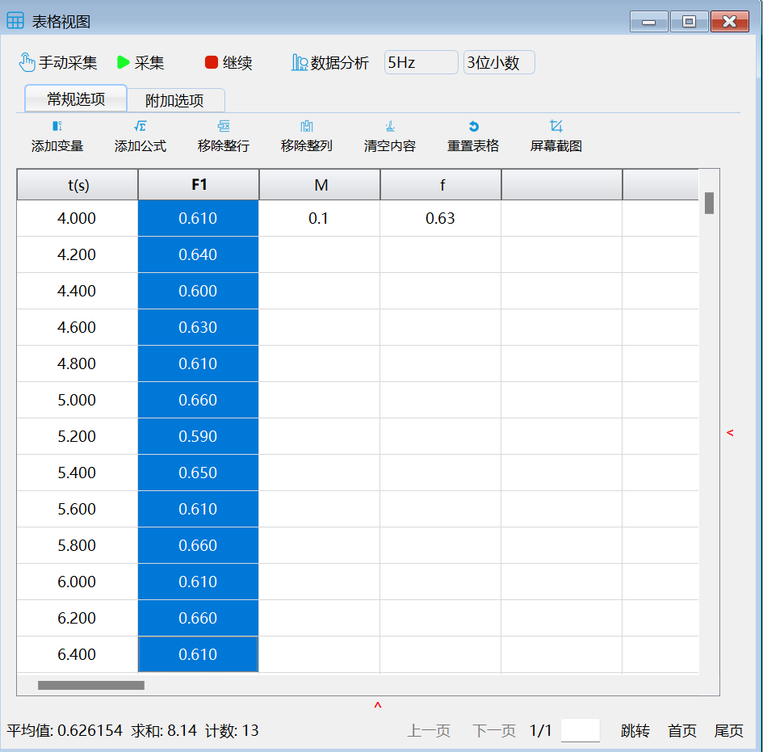
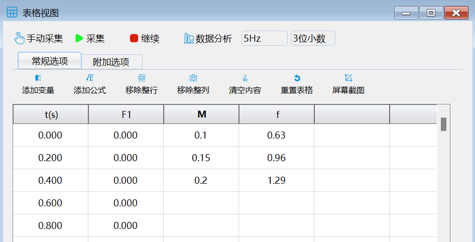
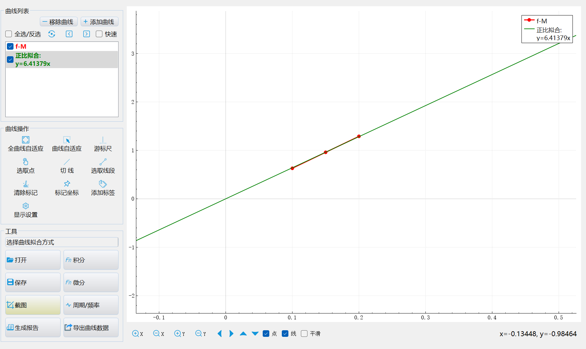

实验十四 摩擦力的影响因素
【实验目的】
通过运用控制变量法验证滑动摩擦力大小与物体接触面的粗糙程度和（正）压力之间的关系。
【实验原理】
物体在水平方向上只受到两个力的作用，分别是使物体向前运动的拉力和阻碍物体运动的滑动摩擦力，由于物体匀速直线运动，因此这两个力相互平衡，它们的大小相等，即拉力等于滑动摩擦力。探究滑动摩擦力的影响因素实验应用控制变量法，分别探究滑动摩擦力大小与正压力、接触面积、接触面粗糙程度和运动速度之间的关系。
【实验器材】
数据采集器、力传感器、计算机、摩擦力实验器或木板等。
【实验装置】

【实验操作步骤】
1.搭建好实验环境。将摩擦力实验器放置在水平桌面上，让力传感器钩住滑块；
2.打开实验数据分析软件，连接好数据采集器和力传感器；并将力传感器调零；
3.点击“表格视图”，双击表格中F列旁边的空白表头，添加表示滑块重量的数据列“M”。同理再添加表示滑动摩擦力的数据列“f”；
4.依次点击摩擦力实验器上的红色按钮“开关”，“正转”缓慢匀速的拉动滑块，拉动一段距离后点击“暂停”采集，得到第一组实验的数据。匀速拉动滑块时，滑块做匀速直线运动，此时拉力与滑动摩擦力是一对平衡力，即拉力大小等于物体滑动摩擦力大小；
5.已知滑块的质量为0.1㎏，所以在M列的第一个单元格中填入0.1。再使用鼠标框选F列中物体匀速运动时的数据，在表格窗口的左下角软件将会自动计算所框选的数据的平均值，即得到第一组实验的滑动摩擦力大小。同时在f列的第一个单元格中填入。
6.同理，依次向滑块上放置一个50克的砝码和100克的砝码（两个50克的砝码）得到第二组实验数据和第三组实验数据。
7.点击“数据分析”，“x”选择M,“y”选择“f”，并点击确定，然后在数据分析窗口中点击“选择曲线拟合方式”并选择正比拟合方式，即可得到滑动摩擦力与质量的关系曲线。因为质量越大，物体所受的压力越大。所以滑动摩擦力与质量的关系等于滑动摩擦力与正压力的关系。分析曲线可得物体所受正压力越大，滑动摩擦力就越大。即正压力与滑动摩擦力是正比关系。



实验结果数据分析